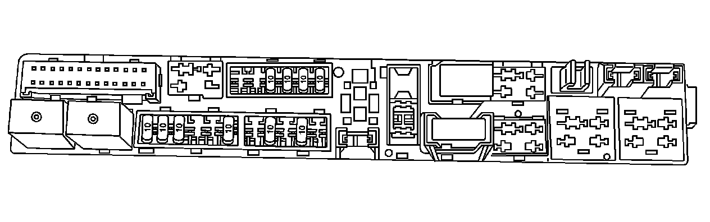
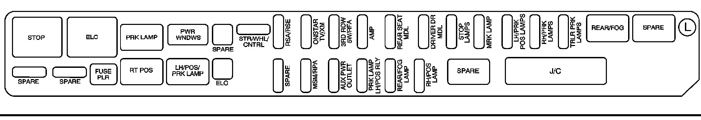

Left Side
REAR UNDERSEAT FUSE BLOCK - LEFT SIDE
The left side rear fuse block is located under the rear seat on the left side of the vehicle. The carpet must be lifted up to access the rear fuse block.

To access the fuse block, push in the two tabs located at each end of the fuse block cover. Then lift the cover off.

RELAYS - USAGE
STOP Not Used
ELC Electronic Level Control (ELC) Compressor Motor
PRK LAMP Not Used
REAR/FOG Not Used
SPARE Spare
RT POS Not Used
LH/POS/PRK LAMP Front & Rear Park Lamps
SPARE Spare
MINI FUSES - USAGE
STR/WHL/CNTRL Steering Wheel Controls
RSA/RSE Rear Seat Entertainment, Rear Seat Audio
ONSTAR TV/XM OnStar� Module, XM Radio
3RD ROW SW/RFA Flip Fold Seat Switches, Remote Keyless Entry System Module
AMP Audio Amplifier
REAR SEAT MDL Rear Seat Module, Flip/Fold Motors
DRIVER DR MDL Driver Door Module (Locks, Outside Rearview Mirror, Window Switches)
STOP LAMPS Not Used
MRK LAMP License Lamps
LH/PRK POS LAMPS Left Side Taillamp, Left Side Front Park Lamps, Sidemarker Lamps
RH/PRK LAMPS Right Side Taillamp, Right Side Front Park Lamps, Sidemarker Lamp
TRLR PRK LAMPS Trailer Park Lamps
SPARE Spare
SPARE Spare
SPARE Spare
MSM/RPA Memory Seat Module, Ultrasonic Rear Parking Assist (URPA) Module
AUX PWR OUTLET Rear Auxiliary Power Outlet
PRK LAMP LH/POS RLY Parking Lamp Relay
REAR/FOG LAMP Not Used
RH/POS LAMP Not Used
J CASE FUSES - USAGE
SPARE Spare
ELC Electronic Level Control (ELC) Compressor
CIRCUIT BREAKERS - USAGE
PWR WNDWS Power Window Motors
MISC. - USAGE
FUSE PLR Fuse Puller
J/C Joint Connector